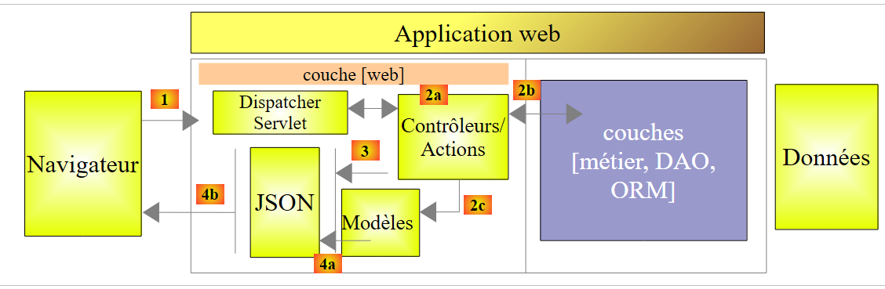

16. Introduction à Spring MVC
16.1. La place de Spring MVC dans une application Web
Situons Spring MVC dans le développement d'une application Web. Le plus souvent, celle-ci sera bâtie sur une architecture multicouche telle que la suivante :
 |
- la couche [Web] est la couche en contact avec l'utilisateur de l'application Web. Celui-ci interagit avec l'application Web au travers de pages Web visualisées par un navigateur. C'est dans cette couche que se situe Spring MVC et uniquement dans cette couche ;
- la couche [métier] implémente les règles de gestion de l'application, tels que le calcul d'un salaire ou d'une facture. Cette couche utilise des données provenant de l'utilisateur via la couche [Web] et du SGBD via la couche [DAO] ;
- la couche [DAO] (Data Access Objects), la couche [ORM] (Object Relational Mapper) et le pilote JDBC gèrent l'accès aux données du SGBD. La couche [ORM] fait un pont entre les objets manipulés par la couche [DAO] et les lignes et les colonnes des tables d'une base de données relationnelle. Une spécification appelée JPA (Java Persistence API) permet de s'abstraire de l'ORM utilisé si celui-ci implémente ces spécifications. Ce sera le cas dans ce tutoriel et nus appellerons donc désormais la couche ORM, la couche JPA ;
- l'intégration des couches est faite par le framework Spring ;
16.2. Le modèle de développement de Spring MVC
Spring MVC implémente le modèle d'architecture dit MVC (Modèle – Vue – Contrôleur) de la façon suivante :
 |
Le traitement d'une demande d'un client se déroule de la façon suivante :
- demande - les URL demandées sont de la forme http://machine:port/contexte/Action/param1/param2/....?p1=v1&p2=v2&... Le [Front Controller] utilise un fichier de configuration ou des annotations Java pour " router " la demande vers le bon contrôleur et la bonne action au sein de ce contrôleur. Pour cela, il utilise le champ [Action] de l'URL. Le reste de l'URL [/param1/param2/...] est formé de paramètres facultatifs qui seront transmis à l'action. Le C de MVC est ici la chaîne [Front Controller, Contrôleur, Action]. Si aucun contrôleur ne peut traiter l'action demandée, le serveur Web répondra que l'URL demandée n'a pas été trouvée.
- Traitement
- (suite)
- l'action choisie peut exploiter les paramètres parami que le [Front Controller] lui a transmis. Ceux-ci peuvent provenir de plusieurs sources :
- du chemin [/param1/param2/...] de l'URL,
- des paramètres [p1=v1&p2=v2] de l'URL,
- de paramètres postés par le navigateur avec sa demande ;
- dans le traitement de la demande de l'utilisateur, l'action peut avoir besoin de la couche [métier] [2b]. Une fois la demande du client traitée, celle-ci peut appeler diverses réponses. Un exemple classique est :
- une page d'erreur si la demande n'a pu être traitée correctement
- une page de confirmation sinon
- l'action demande à une certaine vue de s'afficher [3]. Cette vue va afficher des données qu'on appelle le modèle de la vue. C'est le M de MVC. L'action va créer ce modèle M [2c] et demander à une vue V de s'afficher [3] ;
- réponse - la vue V choisie utilise le modèle M construit par l'action pour initialiser les parties dynamiques de la réponse HTML qu'elle doit envoyer au client puis envoie cette réponse.
Pour un service web / jSON, l'architecture précédente est légèrement modifiée :
 |
- en [4a], le modèle qui est une classe Java est transformé en chaîne jSON par une bibliothèque jSON ;
- en [4b], cette chaîne jSON est envoyée au navigateur ;
Maintenant, précisons le lien entre architecture web MVC et architecture en couches. Selon la définition qu'on donne au modèle, ces deux concepts sont liés ou non. Prenons une application web Spring MVC à une couche :
 |
Si nous implémentons la couche [Web] avec Spring MVC, nous aurons bien une architecture web MVC mais pas une architecture multicouche. Ici, la couche [web] s'occupera de tout : présentation, métier, accès aux données. Ce sont les actions qui feront ce travail.
Maintenant, considérons une architecture Web multicouche :
 |
La couche [Web] peut être implémentée sans framework et sans suivre le modèle MVC. On a bien alors une architecture multicouche mais la couche Web n'implémente pas le modèle MVC.
Par exemple, dans le monde .NET la couche [Web] ci-dessus peut être implémentée avec ASP.NET MVC et on a alors une architecture en couches avec une couche [Web] de type MVC. Ceci fait, on peut remplacer cette couche ASP.NET MVC par une couche ASP.NET classique (WebForms) tout en gardant le reste (métier, DAO, ORM) à l'identique. On a alors une architecture en couches avec une couche [Web] qui n'est plus de type MVC.
Dans MVC, nous avons dit que le modèle M était celui de la vue V, c.a.d. l'ensemble des données affichées par la vue V. Une autre définition du modèle M de MVC est donnée :
 |
Beaucoup d'auteurs considèrent que ce qui est à droite de la couche [Web] forme le modèle M du MVC. Pour éviter les ambigüités on peut parler :
- du modèle du domaine lorsqu'on désigne tout ce qui est à droite de la couche [Web]
- du modèle de la vue lorsqu'on désigne les données affichées par une vue V
Dans la suite, le terme " modèle M " désignera exclusivement le modèle d'une vue V.
16.3. Un projet web / jSON avec Spring MVC
Le site [http://spring.io/guides] offre des tutoriels de démarrage pour découvrir l'écosystème Spring. Nous allons suivre l'un d'eux pour découvrir la configuration Maven nécessaire à un projet Spring MVC.
16.3.1. Le projet de démonstration
 |
- en [1], nous importons l'un des guides Spring ;
 |
- en [2], nous choisissons l'exemple [Rest Service] ;
- en [3], on choisit le projet Maven ;
- en [4], on prend la version finale du guide ;
- en [5], on valide ;
- en [6], le projet importé ;
Les services web accessibles via des URL standard et qui délivrent du texte jSON sont souvent appelés des services REST (REpresentational State Transfer). Un service est dit Restful s'il respecte certaines règles.
Examinons maintenant le projet importé, d'abord sa configuration Maven.
16.3.2. Configuration Maven
Le fichier [pom.xml] est le suivant :
<?xml version="1.0" encoding="UTF-8"?>
<project xmlns="http://maven.apache.org/POM/4.0.0" xmlns:xsi="http://www.w3.org/2001/XMLSchema-instance"
xsi:schemaLocation="http://maven.apache.org/POM/4.0.0 http://maven.apache.org/xsd/maven-4.0.0.xsd">
<modelVersion>4.0.0</modelVersion>
<groupId>org.springframework</groupId>
<artifactId>gs-rest-service</artifactId>
<version>0.1.0</version>
<parent>
<groupId>org.springframework.boot</groupId>
<artifactId>spring-boot-starter-parent</artifactId>
<version>1.2.2.RELEASE</version>
</parent>
<dependencies>
<dependency>
<groupId>org.springframework.boot</groupId>
<artifactId>spring-boot-starter-web</artifactId>
</dependency>
</dependencies>
<properties>
<start-class>hello.Application</start-class>
</properties>
<build>
<plugins>
<plugin>
<groupId>org.springframework.boot</groupId>
<artifactId>spring-boot-maven-plugin</artifactId>
</plugin>
</plugins>
</build>
<repositories>
<repository>
<id>spring-releases</id>
<url>https://repo.spring.io/libs-release</url>
</repository>
</repositories>
<pluginRepositories>
<pluginRepository>
<id>spring-releases</id>
<url>https://repo.spring.io/libs-release</url>
</pluginRepository>
</pluginRepositories>
</project>
- lignes 6-8 : les propriétés du projet Maven. Manque une balise [<packaging>] indiquant le type du fichier produit par la compilation Maven. En l'absence de celle-ci, c'est le type [jar] qui est utilisé. L'application est donc une application exécutable de type console, et non une application web où le packaging serait alors [war] ;
- lignes 10-14 : le projet Maven a un projet parent [spring-boot-starter-parent]. C'est lui qui définit l'essentiel des dépendances du projet. Elles peuvent être suffisantes, auquel cas on n'en rajoute pas, ou pas, auquel cas on rajoute les dépendances manquantes ;
- lignes 17-20 : l'artifact [spring-boot-starter-web] amène avec lui les bibliothèques nécessaires à un projet Spring MVC de type service web où il n'y a pas de vues générées. Cet artifact amène avec lui un très grand de bibliothèques dont celles d'un serveur Tomcat embarqué. C'est sur ce serveur que l'application sera exécutée ;
Les bibliothèques amenées par cette configuration sont très nombreuses :
 |  |
Ci-dessus on voit les trois archives du serveur Tomcat.
16.3.3. L'architecture d'un service Spring [web / jSON]
Pour un service web / jSON, Spring MVC implémente le modèle MVC de la façon suivante :
 |
- en [4a], le modèle qui est une classe Java est transformé en chaîne jSON par une bibliothèque jSON ;
- en [4b], cette chaîne jSON est envoyée au navigateur ;
16.3.4. Le contrôleur C
 |
L'application importée a le contrôleur suivant :
package hello;
import java.util.concurrent.atomic.AtomicLong;
import org.springframework.web.bind.annotation.RequestMapping;
import org.springframework.web.bind.annotation.RequestParam;
import org.springframework.web.bind.annotation.RestController;
@RestController
public class GreetingController {
private static final String template = "Hello, %s!";
private final AtomicLong counter = new AtomicLong();
@RequestMapping("/greeting")
public Greeting greeting(@RequestParam(value = "name", defaultValue = "World") String name) {
return new Greeting(counter.incrementAndGet(), String.format(template, name));
}
}
- ligne 9 : l'annotation [@RestController] fait de la classe [GreetingController] un contrôleur Spring, ç-à-d que ses méthodes sont enregistrées pour traiter des URL. Nous avons vu l'annotation similaire [@Controller]. Le résultat des méthodes de ce contrôleur était un type [String] qui était le nom de la vue à afficher. Ici c'est différent. Les méthodes d'un contrôleur de type [@RestController] rendent des objets qui sont sérialisés pour être envoyés au navigateur. Le type de sérialisation opérée dépend de la configuration de Spring MVC. Ici, ils seront sérialisés en jSON. C'est la présence d'une bibliothèque jSON dans les dépendances du projet qui fait que Spring Boot va, par autoconfiguration, configurer le projet de cette façon ;
- ligne 14 : l'annotation [@RequestMapping] indique l'URL que traite la méthode, ici l'URL [/greeting] ;
- ligne 15 : nous avons déjà expliqué l'annotation [@RequestParam]. Le résultat rendu par la méthode est un objet de type [Greeting].
- ligne 12 : un entier long de type atomique. Cela signifie qu'il supporte la concurrence d'accès. Plusieurs threads peuvent vouloir incrémenter la variable [counter] en même temps. Cela se fera proprement. Un thread ne peut lire la valeur du compteur que si le thread en train de le modifier a terminé sa modification.
16.3.5. Le modèle M
Le modèle M produit par la méthode précédente est l'objet [Greeting] suivant :
 |
package hello;
public class Greeting {
private final long id;
private final String content;
public Greeting(long id, String content) {
this.id = id;
this.content = content;
}
public long getId() {
return id;
}
public String getContent() {
return content;
}
}
La transformation jSON de cet objet créera la chaîne de caractères {"id":n,"content":"texte"}. Au final, la chaîne jSON produite par la méthode du contrôleur sera de la forme :
ou
16.3.6. Exécution
 |
La classe [Application.java] est la classe exécutable du projet. Son code est le suivant :
package hello;
import org.springframework.boot.autoconfigure.EnableAutoConfiguration;
import org.springframework.boot.SpringApplication;
import org.springframework.context.annotation.ComponentScan;
@ComponentScan
@EnableAutoConfiguration
public class Application {
public static void main(String[] args) {
SpringApplication.run(Application.class, args);
}
}
Nous avons déjà rencontré et expliqué ce code dans l'exemple précédent. Exécutons le projet :
 |
On obtient les logs console suivants :
- ligne 13 : le serveur Tomcat démarre sur le port 8080 (ligne 12) ;
- ligne 17 : la servlet [DispatcherServlet] est présente ;
- ligne 20 : la méthode [GreetingController.greeting] a été découverte ;
Pour tester l'application web, on demande l'URL [http://localhost:8080/greeting] :
 |  |
On reçoit bien la chaîne jSON attendue. Il peut être intéressant de voir les entêtes HTTP envoyés par le serveur. Pour cela, on va utiliser l'extension de Chrome appelée [Advanced Rest Client] (Chrome / Ctrl-T / Menu [Applications] / [Advanced Rest Client] - cf Annexes paragraphe 23.11) :
 |
- en [1], l'URL demandée ;
- en [2], la méthode GET est utilisée ;
- en [3], la réponse jSON ;
- en [4], le serveur a indiqué qu'il envoyait une réponse au format jSON ;
- en [5], on demande la même URL mais cette fois-ci avec un POST ;
- en [7], les informations sont envoyées au serveur sous la forme [urlencoded] ;
- en [6], le paramètre name avec sa valeur ;
- en [8], le navigateur indique au serveur qu'il lui envoie des informations [urlencoded] ;
- en [9], la réponse jSON du serveur ;
16.3.7. Création d'une archive exécutable
Nous créons maintenant une archive exécutable :
 |
 |
- en [1] : on exécute une cible Maven ;
- en [2] : il y a deux cibles (goals) : [clean] pour supprimer le dossier [target] du projet Maven, [package] pour le régénérer ;
- en [3] : le dossier [target] généré, le sera dans ce dossier ;
- en [4] : on génère la cible ;
Dans les logs qui apparaissent dans la console, il est important de voir apparaître le plugin [spring-boot-maven-plugin]. C'est lui qui génère l'archive exécutable (cf [pom.xml] ci-dessous) :
<build>
<plugins>
<plugin>
<groupId>org.springframework.boot</groupId>
<artifactId>spring-boot-maven-plugin</artifactId>
</plugin>
</plugins>
</build>
Avec une console, on se place dans le dossier généré :
D:\Temp\wksSTS\gs-rest-service\target>dir
...
11/06/2014 15:30 <DIR> classes
11/06/2014 15:30 <DIR> generated-sources
11/06/2014 15:30 11 073 572 gs-rest-service-0.1.0.jar
11/06/2014 15:30 3 690 gs-rest-service-0.1.0.jar.original
11/06/2014 15:30 <DIR> maven-archiver
11/06/2014 15:30 <DIR> maven-status
...
- ligne 5 : l'archive générée ;
Cette archive est exécutée de la façon suivante :
D:\Temp\wksSTS\gs-rest-service-complete\target>java -jar gs-rest-service-0.1.0.jar
. ____ _ __ _ _
/\\ / ___'_ __ _ _(_)_ __ __ _ \ \ \ \
( ( )\___ | '_ | '_| | '_ \/ _` | \ \ \ \
\\/ ___)| |_)| | | | | || (_| | ) ) ) )
' |____| .__|_| |_|_| |_\__, | / / / /
=========|_|==============|___/=/_/_/_/
:: Spring Boot :: (v1.1.0.RELEASE)
2014-06-11 15:32:47.088 INFO 4972 --- [ main] hello.Application
: Starting Application on Gportpers3 with PID 4972 (D:\Temp\wk
sSTS\gs-rest-service-complete\target\gs-rest-service-0.1.0.jar started by ST in
D:\Temp\wksSTS\gs-rest-service-complete\target)
...
Maintenant que l'application web est lancée, on peut l'interroger avec un navigateur :
 |
16.3.8. Déployer l'application sur un serveur Tomcat
Comme il a été fait pour le projet précédent, nous modifions le fichier [pom.xml] de la façon suivante :
<?xml version="1.0" encoding="UTF-8"?>
<project xmlns="http://maven.apache.org/POM/4.0.0" xmlns:xsi="http://www.w3.org/2001/XMLSchema-instance"
xsi:schemaLocation="http://maven.apache.org/POM/4.0.0 http://maven.apache.org/xsd/maven-4.0.0.xsd">
<modelVersion>4.0.0</modelVersion>
<groupId>org.springframework</groupId>
<artifactId>gs-rest-service</artifactId>
<version>0.1.0</version>
<packaging>war</packaging>
...
</project>
- ligne 9 : il faut indiquer qu'on va générer une archive war (Web ARchive) ;
Il faut par ailleurs configurer l'application web. En l'absence de fichier [web.xml], cela se fait avec une classe héritant de [SpringBootServletInitializer] :
 |
La classe [ApplicationInitializer] est la suivante :
package hello;
import org.springframework.boot.builder.SpringApplicationBuilder;
import org.springframework.boot.context.web.SpringBootServletInitializer;
public class ApplicationInitializer extends SpringBootServletInitializer {
@Override
protected SpringApplicationBuilder configure(SpringApplicationBuilder application) {
return application.sources(Application.class);
}
}
- ligne 6 : la classe [ApplicationInitializer] étend la classe [SpringBootServletInitializer] ;
- ligne 9 : la méthode [configure] est redéfinie (ligne 8) ;
- ligne 10 : on fournit la classe qui configure le projet ;
Pour exécuter le projet, on peut procéder ainsi :
 |
- en [1-2], on exécute le projet sur l'un des serveurs enregistrés dans l'IDE Eclipse ;
Ceci fait, on peut demander l'URL [http://localhost:8080/gs-rest-service/greeting/?name=Mitchell] dans un navigateur :
 |
16.4. Conclusion
Nous avons introduit un type de projets Spring MVC où l'application web envoie un flux jSON au navigateur. Nous allons développer maintenant une application web / jSON pour exposer sur le web la base [dbproduitscategories] étudiée dans les chapitres préécdents.